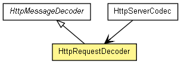

org.jboss.netty.handler.codec.http
类 HttpRequestDecoder
java.lang.Object
 org.jboss.netty.channel.SimpleChannelUpstreamHandler
org.jboss.netty.handler.codec.replay.ReplayingDecoder<org.jboss.netty.handler.codec.http.HttpMessageDecoder.State>
org.jboss.netty.handler.codec.http.HttpMessageDecoder
org.jboss.netty.handler.codec.http.HttpRequestDecoder
org.jboss.netty.channel.SimpleChannelUpstreamHandler
org.jboss.netty.handler.codec.replay.ReplayingDecoder<org.jboss.netty.handler.codec.http.HttpMessageDecoder.State>
org.jboss.netty.handler.codec.http.HttpMessageDecoder
org.jboss.netty.handler.codec.http.HttpRequestDecoder
- 所有已实现的接口：
- ChannelHandler, ChannelUpstreamHandler
public class HttpRequestDecoder
- extends HttpMessageDecoder

Decodes ChannelBuffers into HttpRequests and HttpChunks.
Parameters that prevents excessive memory consumption
| Name | Meaning |
maxInitialLineLength |
The maximum length of the initial line (e.g. "GET / HTTP/1.0")
If the length of the initial line exceeds this value, a
TooLongFrameException will be raised. |
maxHeaderSize |
The maximum length of all headers. If the sum of the length of each
header exceeds this value, a TooLongFrameException will be raised. |
maxChunkSize |
The maximum length of the content or each chunk. If the content length
exceeds this value, the transfer encoding of the decoded request will be
converted to 'chunked' and the content will be split into multiple
HttpChunks. If the transfer encoding of the HTTP request is
'chunked' already, each chunk will be split into smaller chunks if the
length of the chunk exceeds this value. If you prefer not to handle
HttpChunks in your handler, insert HttpChunkAggregator
after this decoder in the ChannelPipeline. |
|
构造方法摘要 |
HttpRequestDecoder()
Creates a new instance with the default
maxInitialLineLength (4096}, maxHeaderSize (8192), and
maxChunkSize (8192). |
HttpRequestDecoder(int maxInitialLineLength,
int maxHeaderSize,
int maxChunkSize)
Creates a new instance with the specified parameters. |
| 从类 java.lang.Object 继承的方法 |
equals, getClass, hashCode, notify, notifyAll, toString, wait, wait, wait |
HttpRequestDecoder
public HttpRequestDecoder()
- Creates a new instance with the default
maxInitialLineLength (4096}, maxHeaderSize (8192), and
maxChunkSize (8192).
HttpRequestDecoder
public HttpRequestDecoder(int maxInitialLineLength,
int maxHeaderSize,
int maxChunkSize)
- Creates a new instance with the specified parameters.